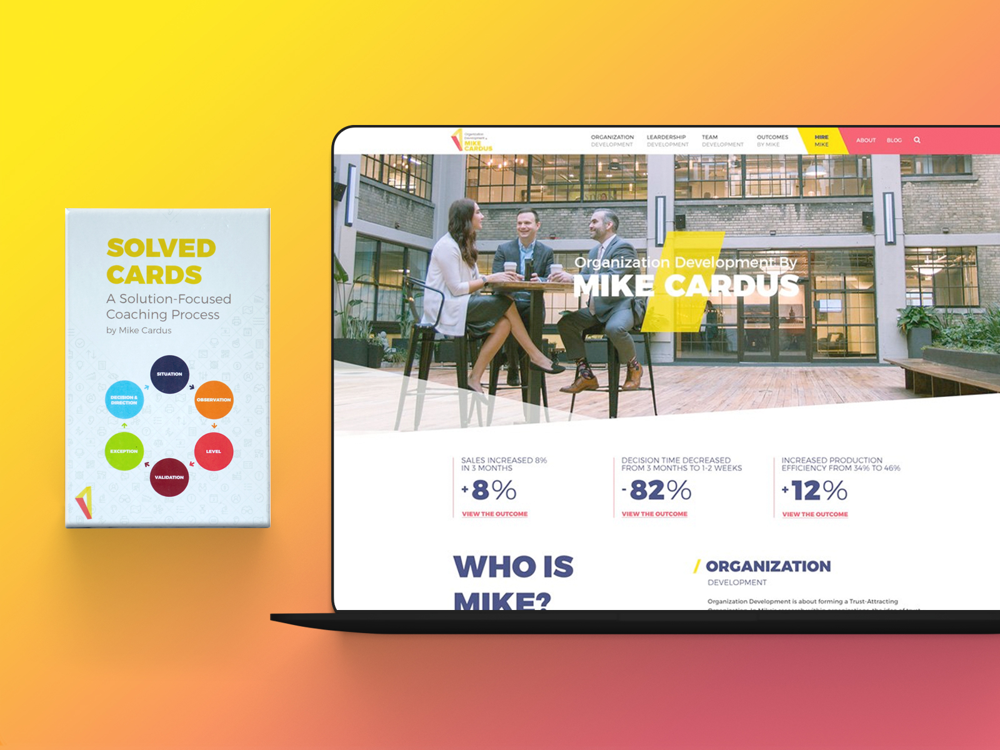
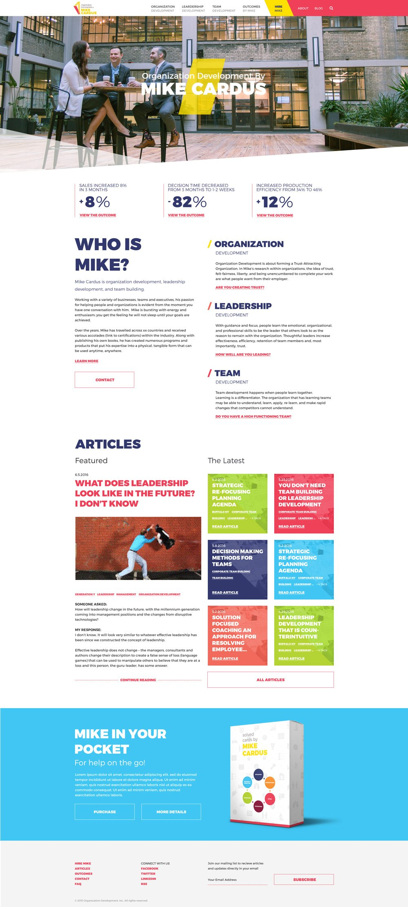

Skip to Content
Mike Cardus.
The next evolution of Mike.

Challenge
Mike Cardus is an organization development professional and leadership coach who has received various accolades within his industry. Cardus has created numerous programs and published works helping companies and individuals worldwide. The 19 IDEAS team presented Cardus a new brand, accompanying collateral, messaging, website, and product design.
Outcome
The 19 IDEAS team presented Cardus a new brand, accompanying collateral, messaging, website, and product design. My role included fleshing out the brand based on the work created by my colleagues, designing his new website, along with his first product, and subsequently an expansion and refresh of that same product.
The Website.
In conjunction with the new brand (developed under 19 IDEAS) I had designed a new website to roll out as Mike Cardus transitioned from “Create Learning” to “Organizational Development by Mike Cardus”. Throughout the website the goal was to both highlight Mike’s knowledge and his successful outcomes through stats.
Showing outcomes woven through out the site
A searchable database of resources written by Mike
Rolling out in conjunction with a colorful new brand
Created & selling Mike’s first product SOLVED Cards
Homepage.
Outcomes.
The new homepage design highlights Mike and his outcomes front and center for the purpose of identification and credibility.
Services.
On the homepage and throughout the design focuses on Mike’s core offerings to offer clarity and boost SEO.
Content.
We ported all of Mike’s content and helped organize his impressive library of self-published resources.

About.
The goal of the about page is to highlight Mike and his processes with a call to action to contact Mike to get the ball rolling.
Organization development.
Here is the Organization Development page which is one of the services Mike offers. In each service we detail the ROI in what you get right up front and to show breadth we detail all of the strategies that comprise each service. Lastly, we ensure prominent call to actions to get a hold of Mike.
Early Concepts.
Here is a glimpse at the design process behind the scenes for Mike’s new website. From the start, the design direction I was going for was big and bold typography based on the new logo we had laid out for him. Much of the layout had stayed the same from the early wireframe designs. In high fidelity I played around with a few different color scenarios, one being the one I have here which featured sections of bold blue instead of white.
Solved Cards.
The concept of SOLVED Cards came from the mind of Mike. The original concept originated in a deck of business cards with images and questions on it. We took those building blocks and built upon them crafting a sleeking and more accessible experience. The design I went with was designed to marry with the new brand’s bright colors and geometry. The first desk was a success and Mike came back to 19 IDEAS to develop a second round in which added an expanded card set, updated box design, and moved the manual on-line along with instructional videos shot by 19 IDEAS.
A Team Effort.
The rebranding and roll out of Mike’s new look was a team effort at 19 IDEAS. Other materials that the teams had developed included Mike’s new logo and business cards, while the color palette was a collaboration. 19 IDEAS also performed a photo shoot for the photos of Mike used in the website.